From Symmetry to Conservation: Noether’s Theorems in Scientific Computing
Why continuous symmetries of the action lead to momentum and energy conservation—and what it takes to carry that structure into simulation, scientific AI, and quantum computing
TECH REVIEW · October 17, 2026 · Physical principles and computational applications

Contents
- 1. A plausible prediction can still be physically wrong
- 2. What exactly remains unchanged?
- 3. A short derivation from action to conserved quantity
- 4. How do Noether’s two theorems differ?
- 5. Why does light lose energy in an expanding universe?
- 6. How can a numerical simulation retain symmetry?
- 7. Should scientific AI learn conservation laws or embody them?
- 8. Equivariant neural networks and interatomic potentials
- 9. In quantum computing, symmetry can identify errors
- 10. Three different meanings of broken symmetry
- 11. What to check in research and development
- References and source material
1. A plausible prediction can still be physically wrong
Imagine a molecular simulation that reproduces the first few oscillations well, yet makes the system’s total energy keep increasing over time. If no external work was done and no heat entered the system, the computational method deserves scrutiny before the physics does. Predicting atomic positions accurately over a short interval and producing physically consistent energy behavior over a long interval are different requirements. AI models with low errors on their training data can encounter a similar problem.
Symmetry provides useful questions. Should a molecule’s internal energy change merely because the entire molecule has been shifted slightly? If an atomic configuration is rotated as a whole, does its energy remain unchanged while its force vectors rotate with it? If energy keeps increasing in a closed model whose external conditions do not change with time, what has gone wrong?
Noether’s theorems connect these questions through a mathematical relationship. A continuous symmetry of a suitable action yields a quantity conserved along solutions of the equations of motion. To use that relationship in computation, we must examine which symmetries are retained by the physical model, the learning architecture, and the numerical algorithm. A guarantee at one level does not automatically extend to the others. [2–4]
The starting point is Shalma Wegsman’s Quanta Magazine article, “How Noether’s Theorem Revolutionized Physics.” Published on February 7, 2025, it connects the problem of energy in general relativity to Emmy Noether’s work of 1918. The shared LinkedIn post introduces the same article. The mathematics and computational applications developed below extend that account with original sources and related research. [1]
2. What exactly remains unchanged?
A statement about symmetry must specify both what is transformed and what counts as unchanged. The geometric symmetry of a circle under rotation and the physical symmetry of laws that remain the same when an entire experiment is translated are related, but concern different objects. In physics, the focus is on how the laws governing motion and the action transform, rather than on a single image or instantaneous state.
A free particle moves in a particular direction, so a picture of its trajectory is not identical under every rotation. Nevertheless, the laws of free-particle motion have no preferred spatial direction. The symmetry of a law must be distinguished from the symmetry of a particular solution. Conversely, moving only the mass attached to a spring fixed to a support changes the spring’s extension. A model describing only that mass’s motion does not have translational symmetry in that direction. Which parts of the apparatus and environment are included in the system matters. [2,3]
Noether’s first theorem concerns continuous symmetries: transformations that can be varied smoothly by arbitrarily small amounts. Continuously changing a displacement, a rotation angle, or the origin of time provides familiar examples. The same infinitesimal-generator argument cannot simply be applied to discrete symmetries such as a triangle’s rotation through 120 degrees or a reflection. Time translation, which shifts the origin of time, also differs from time reversal, which reverses the direction of temporal evolution. [2,3]
| Transformation and conditions | Corresponding conserved quantity | An example that changes the conditions |
|---|---|---|
| Continuous spatial translation of an entire closed system | Total linear momentum | Momentum exchange with a fixed external potential |
| Continuous spatial rotation of an entire closed system | Total angular momentum | An external torque or a field with a fixed direction |
| Time translation of the action | Energy corresponding to the Hamiltonian | External driving that changes with time |
| Global phase rotation of a matter field | The charge associated with that theory | The particular phase symmetry and its interactions must be specified |
The word “entire” is essential. If two particles interact through forces that depend only on their relative position, either particle’s momentum can change continuously while their total momentum remains constant. A changing observable in a small subsystem does not by itself imply a failure of conservation.
3. A short derivation from action to conserved quantity
Let
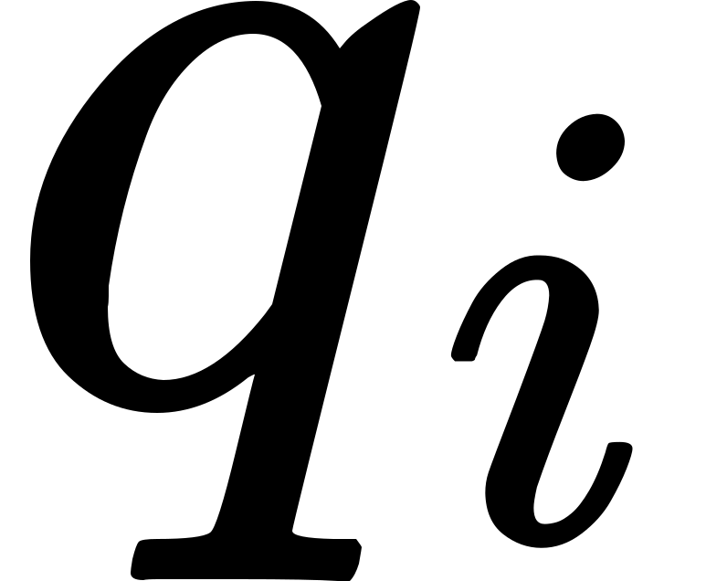
denote generalized coordinates, such as positions or rotation angles, and let denote their time derivatives. The Lagrangian
denote their time derivatives. The Lagrangian  is commonly the difference between kinetic and potential energy and has units of energy. The action
is commonly the difference between kinetic and potential energy and has units of energy. The action  is its time integral, with SI units of J·s.
is its time integral, with SI units of J·s.
![S[q]=\int_{t_1}^{t_2}L(q,\dot q,t)\,dt.](math_7c7f6397d6a7c3.svg)
The actual motion makes the action stationary under admissible small variations of the trajectory. “Stationary” means that the first-order variation vanishes; it does not always mean a minimum. This condition gives the Euler–Lagrange equations and the canonical momenta  . When the coordinate is a position, the corresponding momentum has units of kg·m/s; when it is an angle, the corresponding momentum is angular momentum. [2,3]
. When the coordinate is a position, the corresponding momentum has units of kg·m/s; when it is an angle, the corresponding momentum is angular momentum. [2,3]

First, keep time unchanged and vary by  . Here
. Here
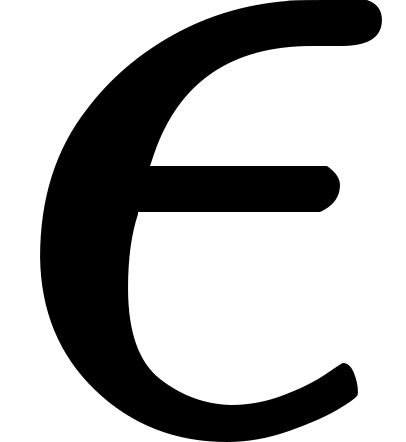
is a small transformation parameter, and has the same units as the coordinate. Allow the first-order variation of the Lagrangian to be  : the action may change by an endpoint term. Substituting the equations of motion and rearranging gives
: the action may change by an endpoint term. Substituting the equations of motion and rearranging gives
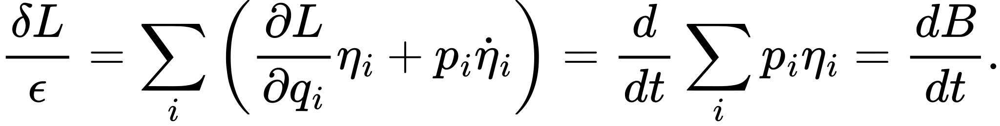
It follows that the time derivative of  is zero. This statement holds along solutions. The condition that the action changes only at the boundary combines with the total derivative obtained from the equations of motion to produce a conserved quantity. It is a broader condition than requiring the Lagrangian itself to remain literally unchanged. [2,3]
is zero. This statement holds along solutions. The condition that the action changes only at the boundary combines with the total derivative obtained from the equations of motion to produce a conserved quantity. It is a broader condition than requiring the Lagrangian itself to remain literally unchanged. [2,3]
If time also transforms, another term enters. Define  and
and  , and suppose the first-order change in the transformed
, and suppose the first-order change in the transformed  is
is  . The parameter’s units are chosen separately for each transformation:
. The parameter’s units are chosen separately for each transformation:
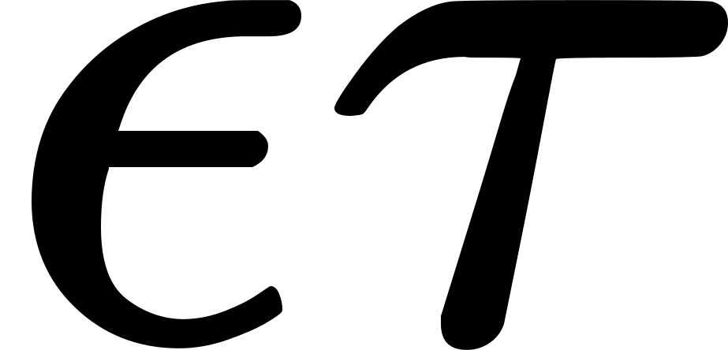
has units of time, of the coordinate, and  of action. Writing
of action. Writing  , the conserved quantity is
, the conserved quantity is

For a spatial translation,
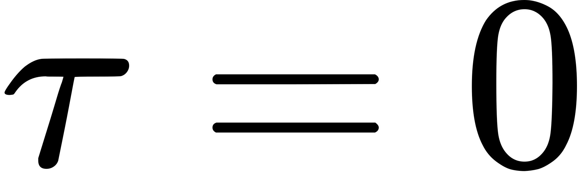
, and the result is momentum in the direction specified by constant . For a rotation, substituting
. For a rotation, substituting  connects the result to
connects the result to  . Taking a time translation with
. Taking a time translation with  gives
gives 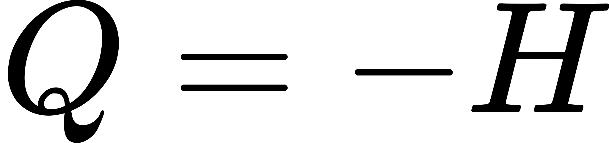
. The overall sign depends on the convention for the direction of transformation; the conserved energy can be expressed as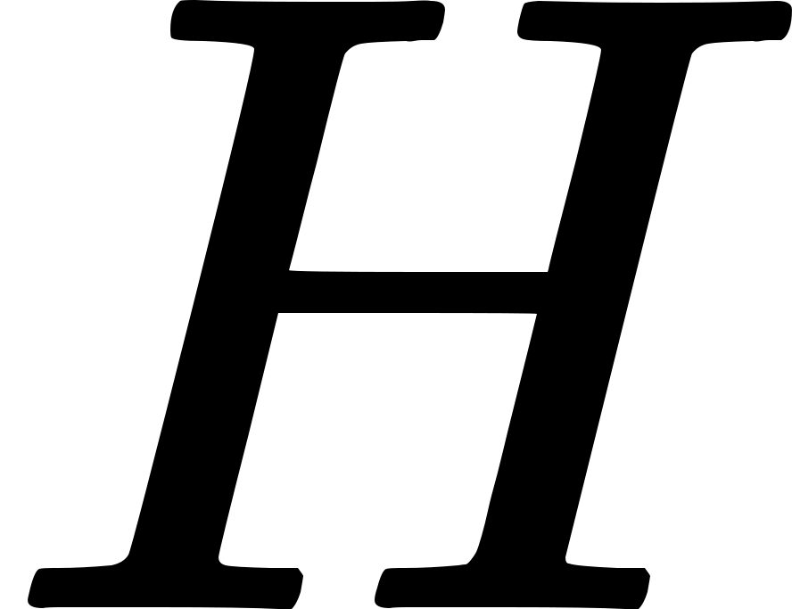
. For a general Lagrangian, whether equals the familiar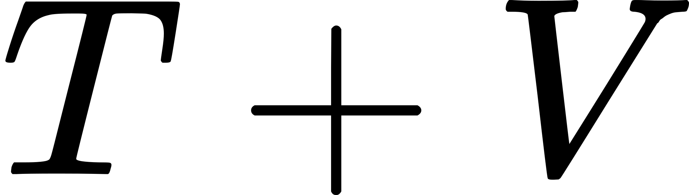
must be checked separately. [3]A driven spring illustrates why the conditions matter. In  , the stiffness
, the stiffness  is changed externally. Along motion satisfying the equations of motion,
is changed externally. Along motion satisfying the equations of motion,

In SI units,
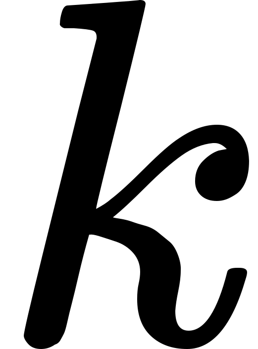
is measured in N/m, and the right-hand side is power in W. The energy change is consistent with the external driving. If the mechanism that adjusts the stiffness is included, energy exchange within a larger system must be described. Simply calling this a “violation of energy conservation” overlooks the system boundary.
4. How do Noether’s two theorems differ?
For distributed quantities such as charge or fluid, conservation is expressed in terms of a density and a flux. If  is charge density and
is charge density and
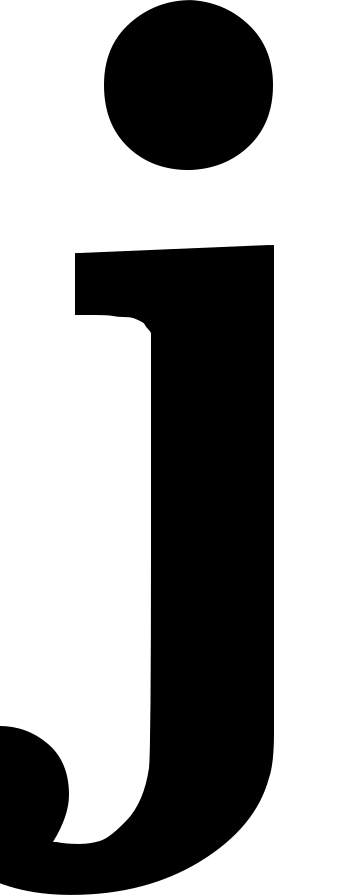
is current density, the local conservation equation and the charge within a finite region
within a finite region  satisfy
satisfy
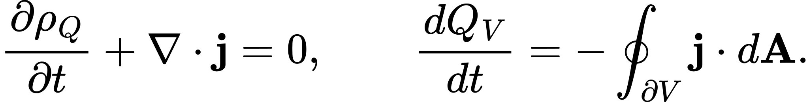
For electric charge, has units of C/m³ and has units of A/m², so the surface integral has units of A. If charge within the region decreases because precisely that amount flows outward, the conservation equation holds exactly. In field theory, the first theorem also yields local continuity equations of this kind. To identify a spatial integral as a constant conserved quantity, the flux and boundary conditions must be checked. [4]
The distinction between the two theorems is not whether they concern all of space or a small region. The first theorem concerns continuous symmetries described by constant parameters, such as a displacement or rotation angle. The second theorem concerns local symmetries whose transformation parameters may be arbitrary functions of spacetime, and yields differential identities among the equations of motion. These identities do not hold only after the equations of motion have been solved. [2]
Gauge transformations of the electromagnetic potentials and coordinate redescriptions in general relativity provide the relevant setting. A single physical state admits multiple representations, so the full set of equations is not independent. In discussing electric charge, too, one must distinguish the current obtained from a matter field’s global phase symmetry, the constraints associated with local gauge invariance, and charges defined at a boundary. Each local gauge freedom is not counted as a new independent conserved quantity. [2,4,5]
5. Why does light lose energy in an expanding universe?
One of the source article’s most interesting themes is energy in general relativity. Here the scope of the phrase “energy conservation breaks down” requires particular care. In general relativity, the matter energy–momentum tensor
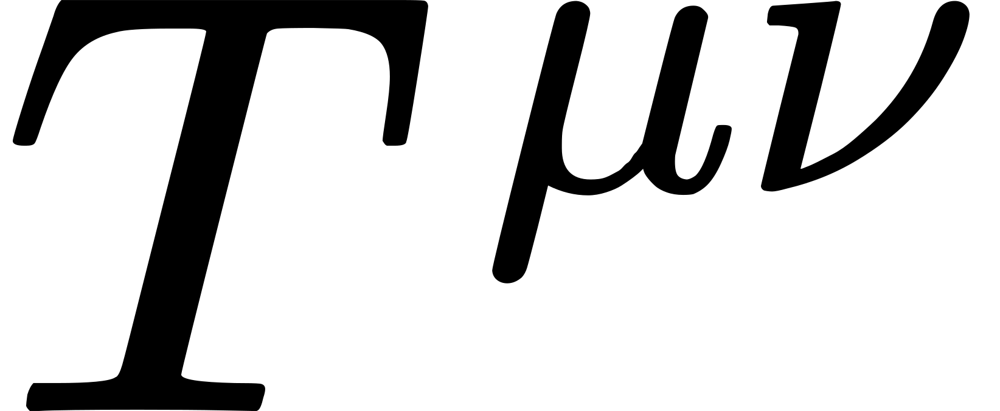
, together with the equations of motion, satisfies the covariant conservation equation . This relation in curved spacetime is not equivalent to a claim that a simple sum of energy over the entire universe remains constant. [6]
. This relation in curved spacetime is not equivalent to a claim that a simple sum of energy over the entire universe remains constant. [6]
Constructing a globally conserved energy in the standard way requires an appropriate time symmetry and boundary conditions. A timelike Killing vector expresses the fact that spacetime geometry does not change in that direction. A generic expanding universe need not possess such a global time-translation symmetry. Energy definitions can also use the asymptotic conditions of an isolated system or other geometric conditions, however, so it would also be excessive to conclude that curvature makes every definition of energy impossible. [6]
The local conservation equation in a homogeneous, isotropic universe makes its connection to photon redshift clear. In units where the speed of light is 1, let  be energy density,
be energy density,
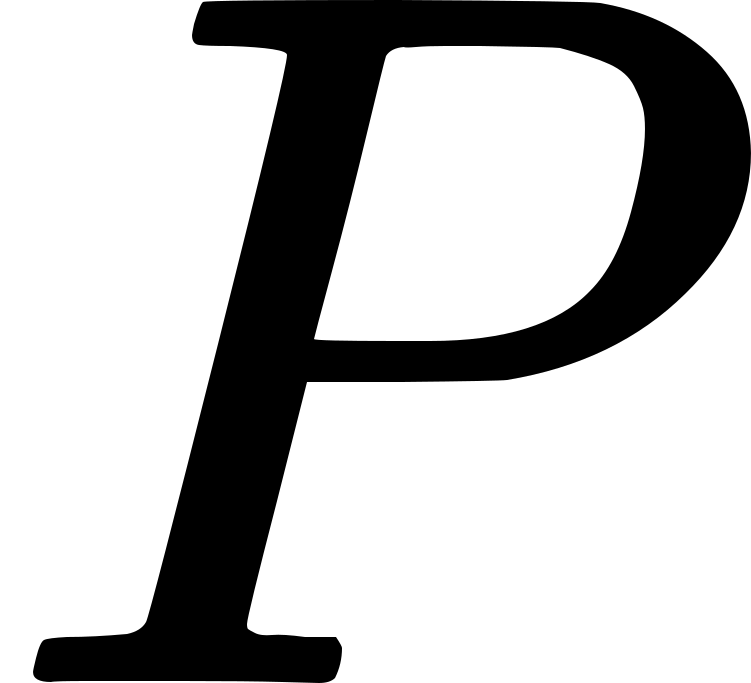
pressure, and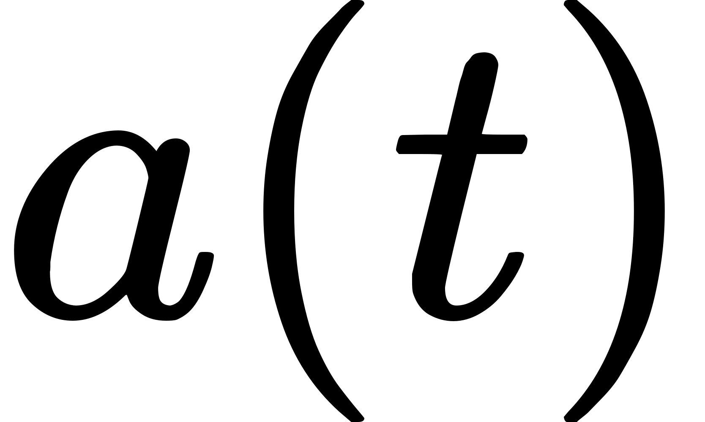
the cosmic scale factor. Then
Here  is proportional to the physical volume corresponding to a fixed comoving volume. For radiation,
is proportional to the physical volume corresponding to a fixed comoving volume. For radiation,  , so its energy density scales as
, so its energy density scales as
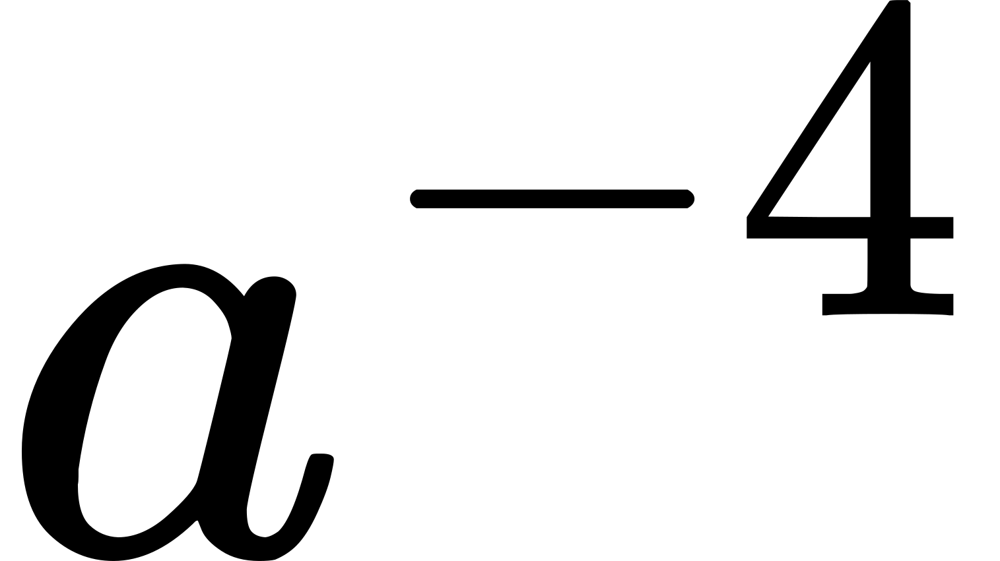
. Besides dilution due to the increasing volume, the energy of each photon decreases as . This behavior is compatible with local covariant conservation and does not require accelerated expansion. The source article’s intuition is useful, but it cannot be carried over into a claim that arbitrary energy can be created in a closed laboratory system. [6]
. This behavior is compatible with local covariant conservation and does not require accelerated expansion. The source article’s intuition is useful, but it cannot be carried over into a claim that arbitrary energy can be created in a closed laboratory system. [6]
6. How can a numerical simulation retain symmetry?
Even when continuous-time equations possess conservation laws, a computer advances the solution in finite time steps. If discretization loses the original structure, small errors can accumulate into artificial heating or unphysical changes in momentum.
Rather than approximating the equations of motion directly, variational integrators discretize the action and derive update rules from it. If the discrete Lagrangian retains the relevant symmetry, the discrete Noether theorem gives conservation of the corresponding momentum. Under appropriate conditions, the method also retains a symplectic structure. This is the geometry of phase space formed by positions and momenta, and provides an important constraint on long-time computation. Marsden and West’s theory and exposition connect methods such as Verlet, used in molecular dynamics, through this perspective. [7]
The term “symplectic” does not imply that the original physical energy is conserved exactly at every step. In general fixed-step methods, energy may oscillate slightly; under suitable regularity and stability conditions, its error remains well controlled over long times. The conserved momenta, the preserved geometry, and the behavior of energy error should be stated separately. [7]
To illustrate the distinction, this review computes a harmonic oscillator directly. Mass and angular frequency are each normalized to 1. The initial position is 1 and momentum is 0, with a time step of 0.1 and 2,000 steps in total. Time is expressed in units of the inverse natural angular frequency. The exact solution has constant energy
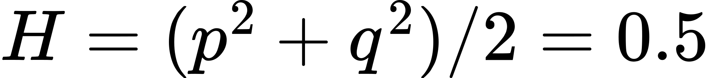
.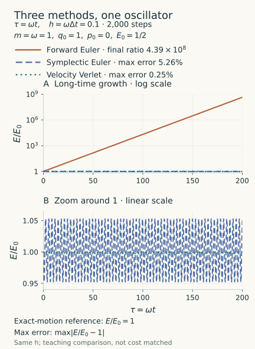
Forward Euler ends with approximately 4.39e8 times its initial energy. In this example, energy grows by exactly
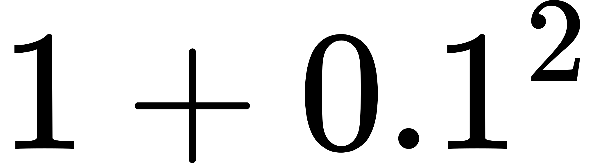
at every step, so the numerical result can also be checked analytically. Symplectic Euler has a maximum relative energy error of approximately 5.26%, while velocity Verlet has approximately 0.25%. The latter error is still nonzero. These results describe the chosen oscillator and time step; they do not establish that every symplectic method is more accurate than every other method.As a more complex example, Xiao and colleagues’ Vlasov–Maxwell particle-in-cell study designs the discrete Lagrangian, gauge invariance, and noncanonical symplectic structure of the particles and electromagnetic fields together. The researchers construct charge-conserving algorithms and validate them using nonlinear Landau damping and electron Bernstein waves. This is a concrete methodology for long-time plasma computation; the results alone do not establish the control performance of a fusion device. [8]
7. Should scientific AI learn conservation laws or embody them?
A general neural network that predicts the next positions and velocities does not acquire an exact built-in conservation law merely because its data contain many conservative trajectories. A Hamiltonian Neural Network (HNN) instead learns a scalar function
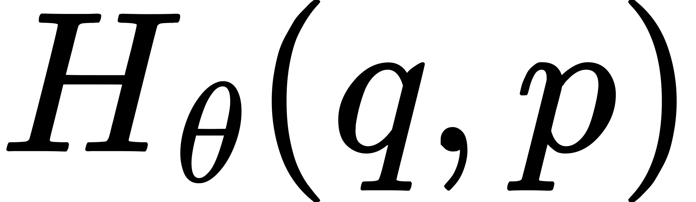
and generates motion through its derivatives. Here denotes neural-network parameters, while
denotes neural-network parameters, while 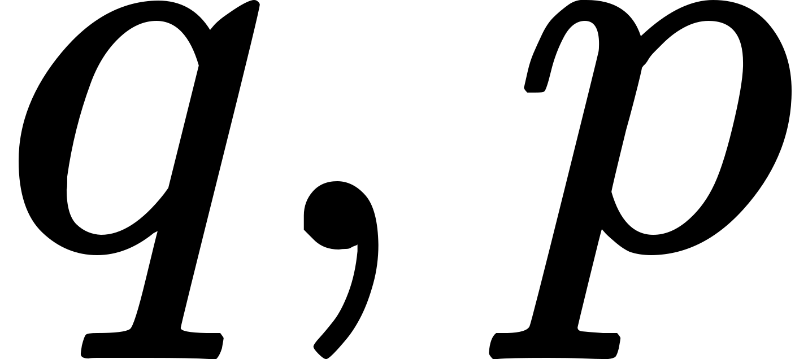
are canonical coordinates and momenta. [9]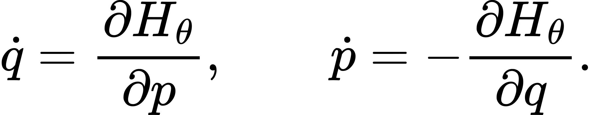
For a smooth  with no explicit time dependence, the two contributions cancel in continuous time, giving
with no explicit time dependence, the two contributions cancel in continuous time, giving
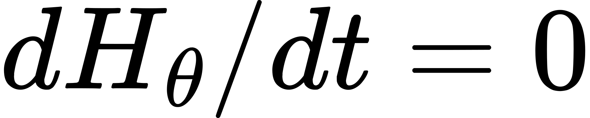
. What is conserved here is the learned function. Whether the true energy has been learned accurately, whether the position and momentum variables have the correct canonical structure, and how much integration error accumulates during computation remain separate questions. The original study uses springs, pendulums, two-body motion, and image-based examples, and explicitly states that friction requires additional modeling. [9]A Lagrangian Neural Network (LNN) learns  from coordinates and velocities, then obtains motion through the Euler–Lagrange equations. This can be advantageous when canonical momenta are difficult to obtain directly. Important conditions include a nonsingular Hessian with respect to velocity when solving for acceleration, time dependence, and the treatment of constraints and dissipation. The original paper is a 2020 workshop study presenting examples including a double pendulum, a relativistic particle, and the one-dimensional wave equation. These examples alone cannot guarantee the reliability of an industrial digital twin. [10]
from coordinates and velocities, then obtains motion through the Euler–Lagrange equations. This can be advantageous when canonical momenta are difficult to obtain directly. Important conditions include a nonsingular Hessian with respect to velocity when solving for acceleration, time dependence, and the treatment of constraints and dissipation. The original paper is a 2020 workshop study presenting examples including a double pendulum, a relativistic particle, and the one-dimensional wave equation. These examples alone cannot guarantee the reliability of an industrial digital twin. [10]
The practical value of this approach lies in restricting the relationship between admissible functions and motion according to physics, instead of asking a learner to fit an arbitrary function. Conversely, imposing a conservative system on equipment that loses heat, or on a system with friction, chemical reactions, or external driving, introduces an incorrect assumption. Such models need to include work and heat transfer, dissipation, and control inputs to explain the observed energy changes.
8. Equivariant neural networks and interatomic potentials
Rotating an entire molecule should leave its energy unchanged, while its force vectors should rotate accordingly. The first property is invariance; the second is equivariance. For a rotation matrix
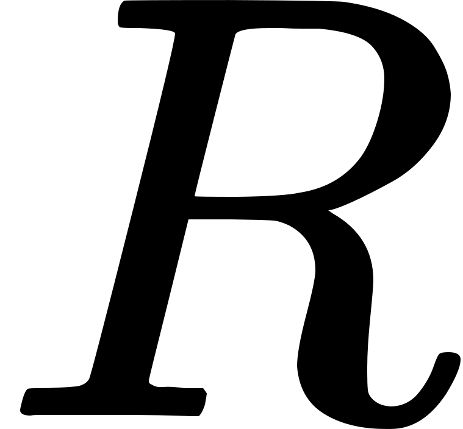
, the target relations are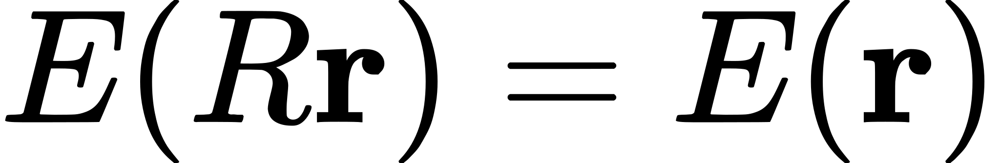
for the scalar prediction and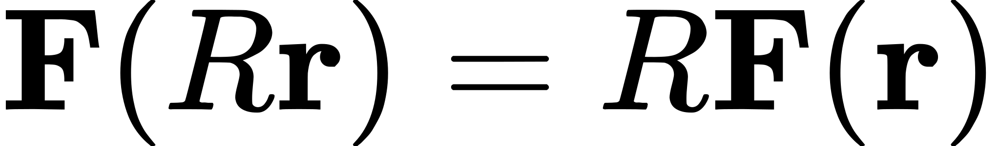
for the forces. If a field or substrate introduces an external direction, that environment must also be transformed, or the symmetry conditions adjusted.NequIP is an interatomic-potential model whose representations respect these spatial symmetries. Its authors evaluate data efficiency and predictive performance on systems including water, amorphous materials, interfaces, and ionic conductors. The important point is to consider both the structure that transforms force vectors correctly and the structure that makes the forces conservative. NequIP calculates forces from its predicted total potential energy as follows. [11]

Taking the negative gradient of a differentiable energy produces a conservative force field. If that energy is invariant under common translations and rotations in an isolated system, the net force and net torque must also vanish. A vector field does not become conservative simply because its outputs are equivariant. The total-energy behavior of an actual molecular-dynamics simulation also depends on its time step, integrator, and thermostat. [11]
For OLED and molecular-materials research, a natural initial application would be the evaluation of structures and thermal motion on an electronic ground-state potential. Excited states, charge transfer, spin–orbit coupling, nonadiabatic transitions, and emission lifetimes require additional physics and validation. This connection is an application proposed by the review; it does not mean that the original NequIP paper validated OLED device efficiency or lifetime.
9. In quantum computing, symmetry can identify errors
In a closed quantum system, an observable with no explicit time dependence is conserved during time evolution if it commutes with the Hamiltonian. This makes it possible to specify the particle number or symmetry subspace that a calculation should retain and inspect its results accordingly. Restricting an allowed subspace through conserved quantities and making the entire calculation faster are separate outcomes to evaluate. [4,12]
Sagastizabal and colleagues’ 2019 study verified parity symmetry while estimating the ground state of the hydrogen molecule with two qubits in a superconducting circuit-QED processor. Rejecting components outside the symmetry subspace that an ideal calculation should occupy reduced errors caused by qubit relaxation and residual excitation. This was an experiment on a real, small-scale quantum device. [12]
Conceptually, if
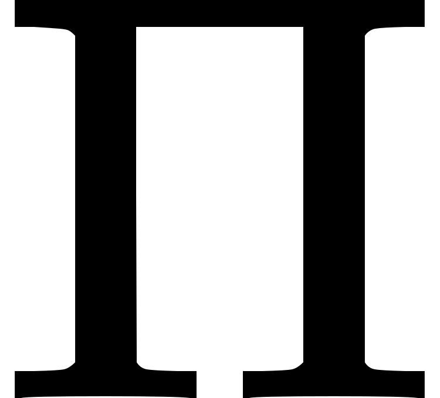
projects onto the target subspace and is the noisy state, the conditional state is

Here
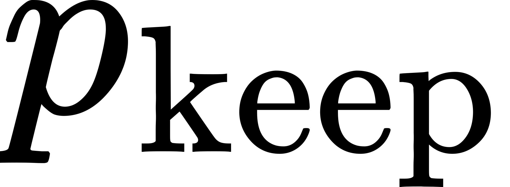
is the retained fraction. Ideally, when independent samples are selected, obtaining the same number of retained samples requires approximately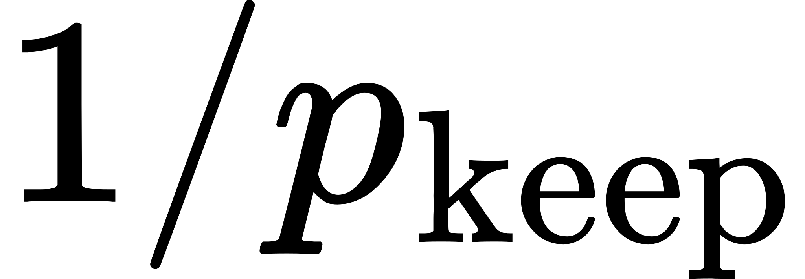
times as many attempts. The actual cost also depends on the measurement method and estimator variance. This check alone cannot detect errors that remain within the target subspace. [12]Parity is a discrete symmetry. It would therefore be inaccurate to describe this example as a direct application of Noether’s first theorem, which concerns continuous symmetries. The appropriate connection is broader: symmetry constrains models and algorithms, and those constraints can also be used to verify results. The method is neither a complete replacement for error correction nor a demonstration of quantum advantage.
10. Three different meanings of broken symmetry
The first is explicit symmetry breaking. A term in the Lagrangian, such as an external field pointing in a particular direction or a time-dependent drive, removes the corresponding symmetry. Changes in the associated quantity reflect the force, torque, or power supplied by that term. The spring with externally varied stiffness is one example.
The second is spontaneous symmetry breaking. The action and laws retain an exact symmetry, but the selected ground state does not share it. This does not in itself imply nonconservation of the Noether current. Even if a potential treats every direction about the origin equally, a particular state may select one direction. The distinction between the law and the state is again essential. [13]
The third is a quantum anomaly. A symmetry of the classical action may fail to survive the integration measure and regularization of the quantized theory. Fujikawa’s original work explains the axial anomaly through transformation of the path-integral measure. An anomaly in the axial current must not be confused with a claim that electric charge arbitrarily fails to be conserved. Anomaly cancellation required for the consistency of dynamical gauge theories is a further, distinct issue. [14]
These distinctions also matter in technical validation. When an expected conserved quantity changes in a calculation, the first task is to identify whether external driving, flux out of a subsystem, an approximate model, or discretization is responsible. Numerical error is not, by itself, evidence for new physics or a quantum anomaly.
11. What to check in research and development
| Intended application | Useful design choices | Observables for evaluating the result |
|---|---|---|
| Long-time integration of molecular dynamics or mechanical systems | Variational or symplectic integrators suited to the system’s symmetries | Energy error over time, total momentum, phase error |
| Learning dynamics from data | HNNs or LNNs with suitable external-force and dissipation terms | Unseen trajectories, true energy, errors at multiple time steps |
| Learning interatomic potentials | Energy invariance, force equivariance, and energy derivatives | Rotation and translation checks, force errors, work around closed paths, NVE stability |
| Particle–electromagnetic-field computation | Preservation of discrete gauge structure and charge continuity | Charge residuals, field constraints, long-time physical observables |
| Quantum-state and energy estimation | Symmetry subspaces and verification measurements | Energy bias, retained fraction, total measurement count, undetectable errors |
This table proposes checks for applying research results. For an interatomic model, for example, energies and forces can be compared before and after translating or rotating all atoms. In an isolated system without external forces, the total force and total torque can also be checked. For a force-only model without an energy function, testing whether the work around a closed path vanishes is one way to examine conservativity. NVE denotes isolated-system conditions with fixed particle number, volume, and energy; a stable trajectory alone does not establish the accuracy of a potential.
Small learning errors can still produce incorrect motion when forces are integrated. Conversely, exact conservation can describe motion on an incorrect potential with high fidelity. Data fit, physical symmetries, conservation relations, numerical integration, and experimental observables must therefore be assessed together. No one of these can substitute for the others.
The strength Noether’s theorems bring to scientific computing lies beyond calculating one more solution. They restrict admissible models and motions, and provide a criterion for asking where a computation loses its physical structure. That criterion extends from classical mechanics and field theory to numerical analysis and scientific AI. In applications, the system boundary, external driving, approximations, and algorithm must always be specified together.
References and source material
- Wegsman, S. How Noether’s Theorem Revolutionized Physics. Quanta Magazine, 2025-02-07. Article. The starting point for the historical context and motivating questions.
- Noether, E. Invariante Variationsprobleme (1918), 235–257. English translation by M. A. Tavel, Transport Theory and Statistical Physics 1(3), 186–207 (1971). DOI · English text, arXiv:physics/0503066v3, 2018-05-30. The first and second theorems appear in §§1–2.
- Harvey Mudd College Physics 111 materials. Symmetries and Conservation Laws, Chapter 6, §§6.4–6.5. Original PDF. A textbook chapter hosted on Professor Saeta’s course website; no author is assigned here because the PDF does not identify one. Mechanics including time transformations and boundary terms.
- Tong, D. Quantum Field Theory, §1.3, Symmetries and Noether’s theorem. Official lecture notes. Currents, charges, boundary conditions, and the background to quantum theory.
- Avery, S. G.; Schwab, B. U. W. Noether’s Second Theorem and Ward Identities for Gauge Symmetries. Journal of High Energy Physics 2016, 31. arXiv:1510.07038 · DOI. Local symmetries, identities, and the role of boundaries.
- Tong, D. General Relativity, Chapter 4, especially §4.3 and §§4.5–4.6. Official lecture notes. Covariant conservation, Killing symmetries, energy, and cosmology.
- Marsden, J. E.; West, M. Discrete mechanics and variational integrators. Acta Numerica 10, 357–514 (2001). DOI · Author’s exposition. Discrete action, momentum, and symplectic structure.
- Xiao, J. et al. Explicit high-order non-canonical symplectic particle-in-cell algorithms for Vlasov-Maxwell systems. Physics of Plasmas 22, 112504 (2015). DOI · arXiv:1510.06972v2, 2016-03-12. An application in numerical plasma computation.
- Greydanus, S.; Dzamba, M.; Yosinski, J. Hamiltonian Neural Networks. NeurIPS 2019. Paper · Conference. The structure in §2 and interpretation of the conserved quantity in §3.2.
- Cranmer, M. et al. Lagrangian Neural Networks. ICLR 2020 Deep Differential Equations Workshop. arXiv:2003.04630v2, 2020-07-30 · Author code. A workshop study, distinguished here from a main-conference paper.
- Batzner, S. et al. E(3)-equivariant graph neural networks for data-efficient and accurate interatomic potentials. Nature Communications 13, 2453 (2022). DOI · Public manuscript. Construction of energy and forces in Methods.
- Sagastizabal, R. et al. Experimental error mitigation via symmetry verification in a variational quantum eigensolver. Physical Review A 100, 010302(R) (2019). DOI · Public manuscript. The public manuscript is titled Error Mitigation by Symmetry Verification on a Variational Quantum Eigensolver.
- Kaplunovsky, V. Spontaneous Symmetry Breaking, University of Texas lecture notes (2020). Original PDF. Symmetries of laws and ground states, and conserved currents.
- Fujikawa, K. Path-Integral Measure for Gauge-Invariant Fermion Theories. Physical Review Letters 42, 1195–1198 (1979). DOI and original paper. The axial anomaly and integration measure. Tong, Gauge Theory §§3.2–3.4 provides supplementary discussion of anomalies and their cancellation.
한국어 리뷰 · English PDF · 한국어 PDF